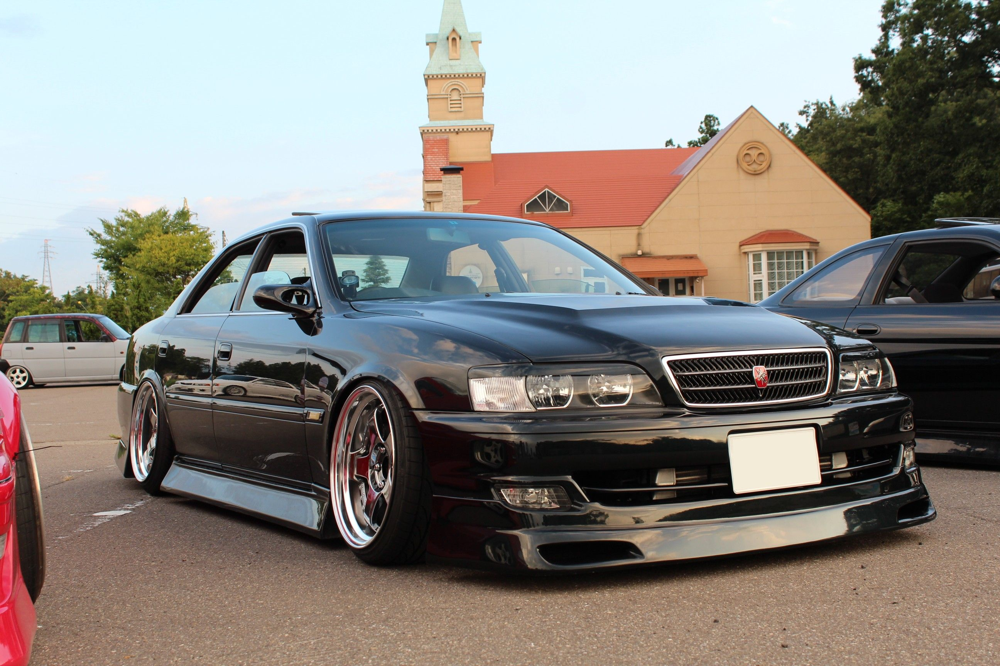

Toyota Chaser

Toyota Chaser (яп. トヨタ・チェイサー, от англ. Chaser «преследователь») — четырёхдверный среднеразмерный седан,
выпускался компанией Toyota в 1977—2001 годах. Модель спроектирована на базе Toyota Mark II.
В модельном ряду Toyota занимает промежуточное место между Toyota Corona и Toyota Crown. Хотя официально
данная модель продавалась только в Японии, она широко представлена на рынках подержанных автомобилей в
России и
Юго-Восточной Азии. Относится к одному классу вместе с Toyota Mark II и Toyota Cresta, полностью
унифицирована с
ними по шасси и салону. Всего выпускалось шесть поколений этой модели.
Первое поколение
Начало производства первого поколения модели приходится на июль 1977 года. Эта модель выпускалась с 1977 по 1980.
В данном поколении использовались кузова серии X30, X31, X40 и X41. Линейка двигателей включала в себя
4-цилиндровый 3T-U объёмом 1,8 литра, 4-цилиндровый 21R-U, 18R-U и 6-цилиндровый M-U/M-EU — оба объёмом 2 литра.
Chaser выступил в качестве конкурента Nissan Skyline.
Второе поколение
Второе поколение модели выпускалось с 1980 по 1984 год в кузовах серии X51 и X61. Гамма двигателей была расширена
за счёт 6-цилиндровых 1G-EU (single cam), 1G-GE (twincam), M-TEU (turbo) рабочим объёмом 2 литра. Автомобиль был
доступен в кузовах четырёх-дверный седан и хардтоп, двух-дверный кузов с этим поколением перестал выпускаться.
Комплектация «Avante» получила спортивную подвеску, и использовала шины Michelin. Новым конкурентом для этого
поколения стал Nissan Leopard, продававшийся по более низкой цене, по сравнению со Skyline.
Третье поколение
Третье поколение модели в кузове X70 было запущено в 1984, и выпускалось до 1988. По сравнению с предыдущим
поколением данный кузов отличался более округлой формой. Начиная с этого поколения был доступен только кузов
четырёх-дверный хардтоп. Внешние размеры этого автомобиля были немного меньше Mark II и Cresta. Тормозные диски
увеличились в диаметре, появились ковшеобразные сидения. Пяти-ступенчатая механическая коробка передач была
доступна только на вариантах «GT twin turbo S», опционально устанавливалась и на других.
В августе 1986 года был доработан двигатель 1G-GEU, появились большие бамперы, измененилась передняя решетка. За
годы выпуска поколения
было несколько специальных серий:
- «Lordly» (январь 1987 года);
- «Chaser Avante» (май 1987 года);
- «New Extra XG Chaser» (август 1987 года);
- «Avante Supra» (январь 1988 года).
В сентябре 1987 года появились двигатели 2L и 2L-T, соответствующие новым правилам выбросов 1986 года.
Четвёртое поколение
В 1989 году начался выпуск четвертого поколения Chaser и продолжилось до 1992 года. Как и в предыдущей
генерации,
были различные типы подвески, что и делило код кузова на 80, 81/83.
Так, в случае с 80-м, задняя подвеска была зависимой на продольных рычагах. Предлагали один бензиновый двигатель
объемом 1.8 4S-Fi и 2.5 литровый дизельный 2L и турбо-дизель 2L-T. Различные модификации обозначались: XL, XG,
Raffine. Это были версии начального уровня. Такие автомобили в Японии использовали некоторые службы такси,
автомобильные школы и т.п.
81-й кузов оснащался в начальной комплектации двигателем 1G-FE (Avante/SXL, 135 л.с.), в более мощные варианты
устанавливались атмосферный 1G-GE (Avante Twin Cam, 150 л.с), компрессорный 1G-GZE (Avante G SC, 170 л.с) и
максимальной комплектации турбированный 1G-GTE Twin Turbo (Twin Turbo, 210 л.с.). Последние также отличались
усиленной подвеской.
В августе 1990 была кардинально пересмотрена вся серия Chaser, и некоторые из моделей получили полностью
новые
двигатели. И в первые, в модельном ряду Chaser, начали использовать двигатель серии JZ.
Модели главного
диапазона, Avante G и GT Twin Turbo, получили новый двигатель 1JZ, хотя выпуск 3,0-литровых Avante G
частично
продолжился. Avante G 2.5 получил 1JZ-GE мощностью 180 л.с. (132 кВт) при 6000 об/мин, в то время как GT
Twin Turbo
получил мощный 1JZ-GTE twin turbo двигатель, способный развивать 280 л.с. (206 кВт) при 6200 об/мин, это
была
максимальная
мощность в лошадиных силах, разрешённая японскими законами.
Эти две модели были доступны только с автоматической 4-ступенчатой или механической 5-ступенчатой
коробками передач W57/55.
Изменилась не только начинка, но и
внешний
вид, был изменен вид передних фар плавно "сглаженных" в решетку радиатора, аналогично сделали и задними
фарами.
Опционально предлагались задний дифференциал LSD, передний и задний спойлеры или система TSC. Масса, в
зависимости
от двигателя и комплектации, варьировалась от 1350 до 1550 кг.
Пятое поколение
В октябре 1992 Chaser X90 заменил предыдущий Chaser X81. Пятое поколение выпускалось с 1992 по 1996 в
кузовах GX90,
JZX90 и SX90 серий. Кузов стал более округлым и автомобиль стал значительно длиннее. Модификации были
значительно
изменены относительно GX81 Chaser:
- GT Twin Turbo был заменён новым Tourer V.
- Топовая модель Avante G получила двигатель 2JZ-GE мощностью 220 л.с. (162 кВт).
Это было следующее поколение линейки двигателей JZ (самый мощный
двигатель - 2JZ-GTE twin turbo устанавливался на флагман JZA80 Supra, выпущенный в том же самом году).
Tourer V
все
ещё приводился в действие двигателем 1JZ-GTE, перекочевавшим от GT Twin Turbo. Также в комплектации Tourer V
присутствовала версия с 5-ступенчатой механической трансмиссией, подходящая для спортивно направленных
автомобилей.
Основным отличием Tourer S от Tourer V было отсутствие турбокомпрессора.
В сентябре 1992 года модели Tourer получили модернизацию оборудования, но всё так же уступали уровню Avante
G.
Данная модификация автомобиля не получила широкого распространения в профессиональном автоспорте, однако
заслужил
большое уважение среди гонщиков-любителей.
С отменой производства модели Cressida после поколения X81 только Mark II, Chaser, и Cresta продавались
на
японском
рынке легковых автомобилей. У каждого из членов семьи Cressida были различные особенности:
- Chaser был приспособлен к спортивному вождению;
- Cresta к роскоши;
- Mark II была основной моделью ряда, хотя автомобили главным образом отличались по лицевой и тыльной
частям (плюс двери для Cresta).
Производились как заднеприводные, так и полноприводные версии седана. Линейка двигателей, устанавливаемых на
данное
авто, варьировалась от скромного 4S-FE (1,8 л, 125 л.с.) до 1JZ-GTE (2,5 твин-турбо, 280 л.с.)
Список используемых двигателей:
- 2L-TE — 2,4 л, дизельный, 4 цилиндра, турбонаддув, 97 л.с. (LX90);
- 4S-FE — 1,8 л, 4 цилиндра, 125 л.с. (SX90);
- 1G-FE — 2,0 л, 6 цилиндров, 135 л.с. (GX90);
- 1JZ-GE — 2,5 л, 6 цилиндров, 180 л.с. (JZX90 и JZX93 — модификация 4WD);
- 2JZ-GE — 3,0 л, 6 цилиндров, 230 л.с. (JZX91);
- 1JZ-GTE — 2,5 л, 6 цилиндров, твин-турбо, 280 л.с. (JZX90).
Шестое поколение
В конце 1996 года в продажу было выпущено последнее поколение автомобилей под маркой Chaser в кузове X100.
Линейка двигателей не претерпела кардинальных изменений, однако все двигатели модификации JZ обзавелись системой
фаз газораспределения VVT-i и ETCS. Спустя некоторое время на замену 1G-FE с 140 л.с. пришёл 1G-FE BEAMS c 160
л.с.
В 1998 году модель прошла рестайлинг. Изменения претерпели:
- передний и задний бампера,
- противотуманные фары,
- головной свет получил штатный ксенон в «ближний» с электронным корректором света в салоне (это было и до
рестайлинга в комплектации Tourer V),
- решётка радиатора,
- задние стоп-сигналы,
- указатели поворота,
- приборная панель и часть элементов салона.
Версии с атмосферными двигателями объёмом 2,5 и 3 литра предлагались
покупателям только с автоматической трансмиссией.
Список используемых двигателей:
- 2L-TE — 2,4 л, дизельный, 4 цилиндра, турбонаддув, 97 л.с., 4-ступенчатая АКПП (LX100)
- 4S-FE — 1,8 л, 4 цилиндра, 125 л.с., 4-скоростная АКПП (SX100);
- 1G-FE — 2,0 л, 6 цилиндров, 140/160 (BEAMS VVT-i), 140/160 л.с., 4-ступенчатая АКПП или 5-ступенчатая
МКПП
(GX100 и GX105 — модификация 4WD);
- 1JZ-GE (VVT-i) — 2,5 л, 6 цилиндров, 200 л.с., 4-ступенчатая АКПП и 5-ступенчатая АКПП у модификации
Tourer
S после рестайлинга 1998 года (JZX100 и JZX105 — модификация 4WD);
- 2JZ-GE (VVT-i) — 3,0 л, 6 цилиндров, 220 л.с., 4-ступенчатая АКПП (JZX101);
- 1JZ-GTE (VVT-i) — 2,5 л, 6 цилиндров, турбо, 280 л.с., 4-ступенчатая и 5-ступенчатая АКПП или
5-ступенчатая
МКПП (JZX100).
Как и в предшествующем поколении, сохранилась модификация Tourer V:
- спортивная подвеска с плавающими сайлент-блоками верхнего переднего рычага,
- нижняя распорка жёсткости,
- увеличенные тормозные суппорты,
- экран, защищающий тормозной диск.
Торсен (блокировка с червячными сателлитами) является опцией для машин с
автоматической трансмиссией и базовой для версий с МКПП. В отличие от аналогичной модели в кузове X90, X100
комплектовался двигателем 1JZ-GTE с одной керамической турбиной большего размера (CT15) и системой изменения фаз
газораспределения (VVT-i).
Все машины в комплектации Tourer V предлагались потребителям с ксеноном на ближний
свет фар, аудиосистемой с усилителем, 6 динамиками и сабвуфером в задней полке, 16-дюймовыми и
17-дюймовыми
литыми колёсными дисками.
Шины на Tourer V были разной ширины: передние 205/55R16 (диск J6.5 ET50), задние
225/50R16 (диск J7.5 ET55). Размер шин на 17-дюймовые колёсные диски: 225/45R17. Так же встречались
модификации
с размером колёс: 225/40R18(перед) и 255/35R18(зад). Такая схема применялась для мощных заднеприводных
автомобилей, каким Tourer V и являлся. Можно было встретить такую схему и на комплектациях Avante G.
Также в
базовую комплектацию входит антипробуксовочная система TRC.
Спорт
В мире модификация Tourer V (JZX90 и JZX100) приобрела большую известность среди людей, занимающихся
усовершенствованием автомобилей (тюнингом), благодаря потенциалу, скрытому в двигателе 1JZ-GTE. Разработкой
усовершенствованных вариантов занимается как официальное подразделение компании Toyota — фирма TRD, так и
множество независимых частных ателье. Усовершенствованные комплектующие производят такие известные компании как
TRD, HKS, Blitz, A’PEXi, Tein и др.
В России данная модель получила наибольшее распространение в двух видах
автомобильного спорта: заездах на 402 м (дрэг-рейсинг) и скоростном прохождении поворотов в заносе (дрифт).
Также выпускалась модификация Tourer S (X90 и X100), в которой присутствовала подвеска от Tourer V, с двигателем
1JZ-GE объёмом 2,5 литра и с изменённым впрыском топлива. Комплектация Tourer S в кузове Х100 имела до
рестайлинга автоматическую коробку с 4 ступенями, после рестайлинга получила модернизированную АКПП.